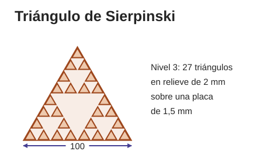
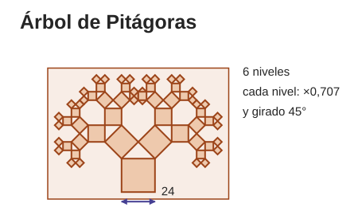
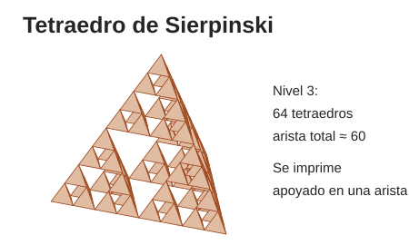
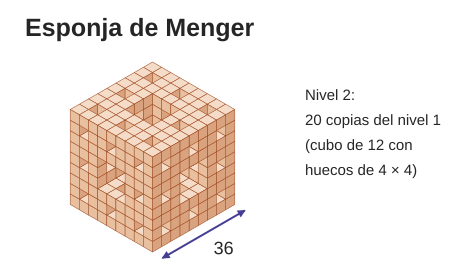
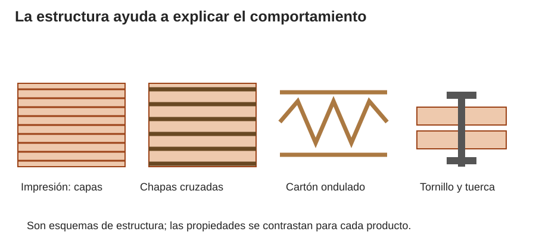

Contenido
El proyecto
Llega lo importante: en equipo, vais a diseñar y fabricar una pieza para la exposición de fractales del Departamento de Matemáticas. Hoy conocéis el encargo, elegís el fractal y su versión, y empezáis a diseñarlo.
1. Formad el equipo
Equipos de 3 o 4. Cada persona tiene un papel, y los papeles rotan para que todo el mundo diseñe y fabrique:
| Papel | Qué hace |
|---|---|
| Diseño | Modela en Tinkercad. |
| Fabricación | Prepara el laminado y la probeta, y dirige la fabricación de la peana. |
| Documentación | Mantiene al día la ficha técnica y las fotos. |
| Seguridad y material | Revisa sujeciones y normas y recoge. |
Cread una carpeta compartida del equipo en Google Drive, con vuestra cuenta del centro, y compartidla conmigo. Dentro, cuatro carpetas: 01_disenos, 02_laminado, 03_fotos y 04_ficha_tecnica. Sin nombres completos en los archivos (las iniciales sí) ni fotos de caras.
2. El encargo
El Departamento de Matemáticas prepara una exposición de fractales y nos ha encargado piezas impresas, cada una con su cartela. Ese departamento es vuestro cliente: la pieza tiene que ayudar a que quien visite la exposición entienda qué es un fractal.
Un fractal es una figura hecha de copias de sí misma: cada parte se parece al todo. En Tinkercad no hace falta escalar nada: modelad primero la pieza más pequeña y construid cada nivel duplicando (Ctrl + D) y agrupando (Ctrl + G) el nivel anterior.
Lo que pide el cliente:
- Una pieza impresa en PLA, de una sola parte, que se pueda coger sin que se rompa.
- Que desde 2 m se vea que es un fractal: los niveles se distinguen.
- Una peana hecha a mano en el taller que sostenga la pieza y su cartela.
- Una cartela que la explique.
- Todo terminado al final del proyecto.
3. Escribid tres requisitos
Un requisito es algo que la pieza tiene que cumplir, y se puede comprobar. «Que quede bonito» no se puede comprobar; «desde 2 m se distinguen tres niveles» sí. Partid de lo que pide el cliente y añadid lo vuestro. Separad lo imprescindible de lo que estaría bien.
4. Elegid un fractal del catálogo
Todos los equipos hacen un fractal, y varios equipos pueden elegir el mismo. Los dibujos son ideas para empezar, no planos: las medidas que no aparezcan, calculadlas. Empezad por uno básico o medio; los de ampliación necesitan más tiempo y mi permiso.
Triángulo de Sierpinski

Ampliar croquis (nueva pestaña)
Básica. Placa triangular de 100 de lado y 1,5 de grueso con 27 triángulos en relieve de 2 (nivel 3). Los triángulos solo se tocan por las puntas: la placa los une.
Pista: un Polígono de 3 lados para el triángulo más pequeño; tres copias forman el siguiente. Su fondo es la altura del triángulo: calculadla.
Probeta: el nivel 1: tres triángulos de 12,5 sobre su placa.
Cómo se prueba: La probeta sale de una sola parte y sus triángulos no se despegan de la placa. En la pieza completa, desde 2 m se distinguen los tres niveles.
Árbol de Pitágoras

Ampliar croquis (nueva pestaña)
Media. Placa de unos 130 × 95 y 1,5 de grueso con cuadrados en relieve de 2: seis niveles, cuadrado de la base de 24 y cada nivel 0,707 veces el anterior, girado 45°. Es el mismo árbol que 1.º de ESO monta en papel.
Pista: empezad por la copa, con un cuadrado y sus dos cuadrados pequeños encima; agrupad, duplicad y colocad las dos copias, giradas 45° a cada lado, sobre el cuadrado de abajo.
Probeta: la copa: los tres niveles más pequeños sobre su placa.
Cómo se prueba: Con el calibre, medid en la probeta el lado de sus tres cuadrados: cada uno mide 0,707 veces el anterior (±0,3 mm).
Tetraedro de Sierpinski

Ampliar croquis (nueva pestaña)
Ampliación. Nivel 3: 64 tetraedros de 8,5 de arista, separados 7,5 (luego 15 y 30) para que se solapen en las puntas y la pieza sea una sola. Arista total de unos 60. Se imprime apoyada en una arista: girada 54,7° y con 2,5 mm recortados por abajo.
Pista: un Cono de 3 lados es un tetraedro si sus seis aristas miden lo mismo (comprobadlo con la Regla); tres copias abajo y una encima forman el nivel siguiente.
Probeta: el nivel 1: cuatro tetraedros, impreso de canto como la pieza.
Cómo se prueba: La probeta es una sola pieza y no se parte al cogerla por las puntas. La pieza completa, además, se sostiene sola.
Esponja de Menger

Ampliar croquis (nueva pestaña)
Ampliación. Cubo de 36, nivel 2. El nivel 1 es un cubo de 12 con tres huecos pasantes de 4 × 4; el nivel 2 son 20 copias del nivel 1. Es la versión impresa de las maquetas de papel de 2.º de ESO.
Pista: los huecos son Cubos en modo Hueco más largos que la pieza; para el nivel 2, colocad 27 copias del nivel 1 y quitad las 7 del centro.
Probeta: el nivel 1: un cubo de 12 con sus tres huecos.
Cómo se prueba: En la probeta, los tres huecos atraviesan y sus techos no se hunden. En el laminador, con relleno al 100 %, los gramos de los niveles 0, 1 y 2 siguen la predicción (20/27)ⁿ (±5 %); después, laminadlos con el relleno normal y explicad por qué ya no la siguen.
5. Probeta y pieza completa
- Cada equipo imprime una probeta: un trozo pequeño de su fractal, para probar las uniones y el acabado antes de la pieza entera.
- Las piezas completas las imprimo yo fuera de clase, empezando por las mejor resueltas, hasta donde dé tiempo. Las que se impriman irán a la exposición.
- Guardad los diseños en 01_disenos como probeta_v1.stl y pieza_v1.stl, y la captura del laminado de cada uno en 02_laminado.
- En la ficha técnica, anotad el nivel del fractal y cuántas piezas pequeñas lleva.
6. La peana
La pieza se expone sobre una peana que hacéis vosotros en el taller, con lo que practicasteis con los retales: marcar, cortar, taladrar, limar y unir. Cada persona hace al menos dos de esas operaciones.
- Una base plana, algo más grande que la pieza (unos 2 cm por cada lado).
- Un soporte inclinado para la cartela A5, unido a la base con tornillos y tuercas o con cola.
- Lo que haga falta para que la pieza no se mueva: un tope, un rebaje o un taladro.
Diseñadla en Tinkercad (diseño peana_v1) para sacar las medidas y la plantilla a tamaño real. Elegid el material entre los que hay en el taller:

| Material | Ventajas | Cuidado con |
|---|---|---|
| PLA (plástico de la impresora) | Formas complicadas, relieves, piezas pequeñas. | El calor (se ablanda al sol) y los golpes. Las capas son su punto débil. |
| Contrachapado o madera | Piezas planas y resistentes, se puede atornillar y reparar. | El polvo al lijar y las astillas. Hay que cortar a mano. |
| Cartón | Maquetas y piezas ligeras, barato y fácil de cortar. | La humedad. No aguanta peso. |
| Tornillos y tuercas | Uniones que se desmontan y se reparan. | Elegir bien el diámetro y el largo. |
7. Elegid la mejor versión
Un mismo fractal se puede hacer de muchas formas: con más o menos niveles, más grande o más pequeño, con más o menos relleno. Para decidir, comparad al menos dos versiones con datos: los gramos y el tiempo que da el laminador y lo que os enseñe la probeta. Haced lo mismo con el material de la peana. Una matriz de decisión os ayuda a hacerlo con orden:
- Tachad las opciones que no cumplen algún requisito imprescindible: esas no compiten.
- Elegid criterios (que se vean los niveles, gramos de PLA, tiempo de impresión, resistencia, accesibilidad…) y dadle a cada uno un peso según lo importante que sea. Accesibilidad quiere decir que cualquier persona pueda ver y coger bien la pieza: sin puntas que pinchen y con los niveles bien a la vista.
- Puntuad cada opción del 1 al 5 en cada criterio y multiplicad por el peso.
- Sumad: gana la que más puntos tenga.
Pruébalo. Mira el ejemplo del copo de Koch, cambia pesos y puntuaciones, y después elige «La vuestra» para hacer la de vuestro fractal.
Coste: calculadlo con la cantidad. Si la pieza gasta 12 g de PLA y el kilo cuesta 20 €: 12 / 1000 × 20 = 0,24 €.
Sostenibilidad: una pieza que no se rompe al manipularla es más sostenible que una que gasta poco material pero se parte en la primera visita. Y cada gramo que ahorráis sin perder lo imprescindible es plástico que no se gasta.
8. La cartela de la exposición
Cada pieza va a la exposición con su cartela: el cartel pequeño que se coloca al lado y explica qué se está viendo. La hace el mismo equipo que fabrica la pieza y tiene que llevar:
- El nombre del fractal y quién lo describió por primera vez, y en qué año.
- Qué es, en dos o tres frases vuestras: cómo se construye cada nivel a partir del anterior.
- Un dato matemático de vuestra pieza, calculado por vosotros: cuántas piezas pequeñas tiene, cuánto mide cada nivel o qué parte del volumen queda.
- Cómo se ha fabricado: programa de diseño, material, y los gramos y el tiempo de impresión que dio el laminador.
- El nombre del equipo y el curso.
Formato: media hoja (A5) en horizontal, con letra que se lea a un metro y, como mucho, una imagen. Hacedla en un documento de Google con la cuenta del centro, descargadla en PDF con el nombre cartela.pdf y subidla con la pieza a la tarea de Moodle Pieza final (modelo 3D + foto). La imprimo yo y la llevo junto a la pieza.
9. Antes de acabar la sesión
- Fractal, versión, material de la peana y tres requisitos decididos.
- Copia de la ficha técnica del equipo guardada en 04_ficha_tecnica, con el apartado 1 empezado.
- Un boceto con las medidas de cada nivel, calculadas por vosotros, y otro de la peana.
- Si os da tiempo, la probeta empezada en Tinkercad (diseño probeta_v1): dos personas modelan por turnos y las demás calculan medidas y documentan. Si no, se empieza al principio de la próxima sesión.
Compruébalo
Une cada requisito de la peana con lo que hay que mirar al elegir su material y sus uniones.
Une cada requisito de la peana con lo que hay que mirar al elegir su material y sus uniones.
", "showMinimize": false, "itinerary": {"showClue": false, "clueGame": "", "percentageClue": 40, "showCodeAccess": false, "codeAccess": "", "messageCodeAccess": ""}, "cardsGame": [{"url": "", "x": 0, "y": 0, "author": "", "alt": "", "audio": "", "color": "#000000", "backcolor": "#ffffff", "eText": "La%20peana%20tiene%20que%20sostener%20la%20pieza%20sin%20volcar", "urlBk": "", "xBk": 0, "yBk": 0, "authorBk": "", "altBk": "", "audioBk": "", "colorBk": "#000000", "backcolorBk": "#ffffff", "eTextBk": "Una%20base%20ancha%20y%20r%C3%ADgida%3A%20mejor%20contrachapado%20que%20cart%C3%B3n"}, {"url": "", "x": 0, "y": 0, "author": "", "alt": "", "audio": "", "color": "#000000", "backcolor": "#ffffff", "eText": "La%20cartela%20tiene%20que%20quedar%20inclinada%20y%20fija", "urlBk": "", "xBk": 0, "yBk": 0, "authorBk": "", "altBk": "", "audioBk": "", "colorBk": "#000000", "backcolorBk": "#ffffff", "eTextBk": "Un%20atril%20unido%20a%20la%20base%20con%20tornillos%20o%20con%20cola"}, {"url": "", "x": 0, "y": 0, "author": "", "alt": "", "audio": "", "color": "#000000", "backcolor": "#ffffff", "eText": "La%20exposici%C3%B3n%20puede%20durar%20semanas%20en%20un%20pasillo", "urlBk": "", "xBk": 0, "yBk": 0, "authorBk": "", "altBk": "", "audioBk": "", "colorBk": "#000000", "backcolorBk": "#ffffff", "eTextBk": "Un%20material%20que%20no%20se%20comba%20ni%20se%20estropee%20con%20la%20humedad%20%28no%20el%20cart%C3%B3n%29"}, {"url": "", "x": 0, "y": 0, "author": "", "alt": "", "audio": "", "color": "#000000", "backcolor": "#ffffff", "eText": "Se%20tiene%20que%20poder%20desmontar%20y%20reparar", "urlBk": "", "xBk": 0, "yBk": 0, "authorBk": "", "altBk": "", "audioBk": "", "colorBk": "#000000", "backcolorBk": "#ffffff", "eTextBk": "Uniones%20con%20tornillos%20y%20tuercas%2C%20no%20solo%20con%20cola"}, {"url": "", "x": 0, "y": 0, "author": "", "alt": "", "audio": "", "color": "#000000", "backcolor": "#ffffff", "eText": "Tiene%20que%20gastar%20poco%20material", "urlBk": "", "xBk": 0, "yBk": 0, "authorBk": "", "altBk": "", "audioBk": "", "colorBk": "#000000", "backcolorBk": "#ffffff", "eTextBk": "Medidas%20justas%3A%20unos%202%20cm%20m%C3%A1s%20que%20la%20pieza%20por%20cada%20lado"}], "isScorm": 0, "textButtonScorm": "Guardar la puntuación", "repeatActivity": true, "weighted": 100, "textAfter": "", "version": 2, "percentajeCards": 100, "type": 2, "showSolution": true, "timeShowSolution": 3, "time": 3, "evaluation": false, "evaluationID": "f96bc37c-5aaf-40e4-af65-a544218a46a6", "id": "idevice-1791908104513-5onbv9jry", "msgs": {"msgSubmit": "Enviar", "msgClue": "¡Genial! La pista es:", "msgCodeAccess": "Código de acceso", "msgPlayStart": "Pulsa aquí para jugar", "msgScore": "Puntuación", "msgErrors": "Errores", "msgHits": "Aciertos", "msgMinimize": "Minimizar", "msgMaximize": "Maximizar", "msgFullScreen": "Pantalla Completa", "msgExitFullScreen": "Salir del modo pantalla completa", "msgNoImage": "Pregunta sin imágenes", "msgEndGameScore": "Comience la partida antes de guardar la puntuación.", "msgScoreScorm": "La puntuación no se puede guardar porque esta página no forma parte de un paquete SCORM.", "msgOnlySaveScore": "¡Solo puede guardar la puntuación una vez!", "msgOnlySave": "Solo puede guardar una vez", "msgInformation": "Información", "msgYouScore": "Su puntuación", "msgAuthor": "Autoría", "msgOnlySaveAuto": "Su puntuación se guardará después de cada pregunta. Solo puede jugar una vez.", "msgSaveAuto": "Su puntuación se guardará automáticamente después de cada pregunta.", "msgSeveralScore": "Puede guardar la puntuación tantas veces como quiera", "msgYouLastScore": "La última puntuación guardada es", "msgActityComply": "Ya ha realizado esta actividad.", "msgPlaySeveralTimes": "Puede realizar esta actividad cuantas veces quiera", "msgClose": "Cerrar", "msgAudio": "Audio", "msgNumQuestions": "Número de tarjetas", "msgTryAgain": "Necesitas al menos %s% de respuestas correctas para obtener la información. Inténtalo de nuevo.", "msgEndGameM": "Has completado el juego. Tu puntuación es %s.", "msgUncompletedActivity": "Actividad no completada", "msgSuccessfulActivity": "Actividad superada. Puntuación: %s", "msgUnsuccessfulActivity": "Actividad no superada. Puntuación: %s", "msgTypeGame": "Relaciona", "msgCheck": "Comprobar", "msgRestart": "Reiniciar"}}